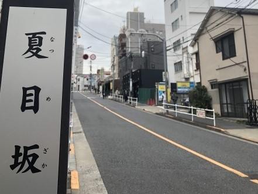

LOCATION
周辺環境
若松河田駅（徒歩5分）
都心の利便性と落ち着いた住環境での暮らしが叶うロケーション。
現地周辺には教育機関や大学病院があり、ファミリー層に人気のエリアです。都心の主要エリアから少し離れているため、治安は良く、落ち着いた暮らしが実現できます。
スーパーマーケットや医療機関、保育施設など、生活に必要な施設が徒歩圏に揃い、忙しい毎日をサポートしてくれます。また公園も近く、自然を身近に感じられる恵まれた環境であり、子育てもしやすく、ゆとりある暮らしが叶います。
シングルの方から子育てファミリーまで、どの世代の方にも快適なロケーションです。
なお現地周辺には歴史の趣が感じられる場所が点在しています。休日にふらりと散策するのも気分転換になり、おすすめです。
-

夏目坂（徒歩2分）
-
神楽坂（徒歩24分）
-

まいばすけっと 新宿原町３丁目店（徒歩1分）
※写真はイメージです。 -
東京女子医科大学病院（徒歩7分）
※写真はイメージです。 -
成城中学校・成城高等学校（徒歩3分）
※写真はイメージです。 -
肥後細川庭園（徒歩24分）
-

戸山公園（徒歩13分）
-

新宿御苑（徒歩29分）
LIFE INFORMATION
-
-
ショッピング施設
- まいばすけっと 新宿原町３丁目店
- 1分
- 三徳 夏目坂店
- 4分
- よしやSainE 柳町店
- 4分
- ライフ 若松河田駅前店
- 5分
- まいばすけっと牛込柳町駅東店
- 8分
- 業務スーパー 新宿榎店
- 14分
- クリエイトＳ・Ｄ 新宿若松町店
- 3分
- スギ薬局 新宿若松町店
- 5分
- ファミリーマート 牛込柳町駅前店
- 4分
- セブン-イレブン 新宿若松町店
- 4分
-
教育施設
- フロンティアキッズ夏目坂分園
- 3分
- 原町みゆき保育園
- 3分
- 至誠会保育園
- 9分
- しんじゅくいるまこども園
- 10分
- アスク薬王寺保育園
- 10分
- 早稲田南町保育園
- 11分
- 牛込成城幼稚園
- 4分
- 新宿区立市谷幼稚園
- 8分
- 新宿区立牛込仲之幼稚園
- 9分
- 新宿区立早稲田幼稚園
- 9分
- 新宿区立早稲田小学校
- 8分
- 新宿区立牛込第二中学校
- 8分
- 成城中学校・成城高等学校
- 3分
-
-
-
医療機関
- 医療法人社団澄琴会 夏目坂皮フ科クリニック
- 2分
- 神楽坂Ｄ．Ｓ．マイクリニック
- 8分
- えとう内科クリニック
- 10分
- 早稲田クリニック
- 12分
- 市谷薬王寺クリニック
- 12分
- 曙橋よつばファミリークリニック
- 12分
- 東京女子医科大学病院
- 7分
- 国立国際医療研究センター病院
- 9分
-
その他
- 戸山公園
- 13分
- 肥後細川庭園
- 24分
- 新宿御苑
- 29分
- 牛込警察署 河田町交番
- 7分
- 若松町特別出張所
- 9分
- 新宿区立戸山図書館
- 12分
-